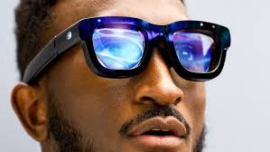

Concept Statement: Purpose Driven Vision is an enhanced reality glasses system designed to enhance the human perception on switching between adapted visual modes. Each mode will highlight and feature corresponding to daily tasks such as navigation, safety, social interactions and work. In a futuristic world full of data and sensory overload, these glasses encourage individuals to focus on what really matters, overall changing how we interact within our environment.
Source: stockcake.com
Context/Problem: As cities overpopulate and digital information floods our lives, humans face the challenge of being able to process all this information making it overwhelming. Navigating busy streets, keeping themselves and others safe, staying creative and connecting socially with others all become more difficult due to constant distractions. The traditional ways people see and interpret the world will no longer meet the demand of a complex, data rich environment.
Source: YouTube thumbnail
Technology/Interaction (Part 1): Purpose Driven Vision glasses use advanced sensors and algorithms to adapt visual information for real-time situations. Users of these glasses would be able to switch between modes with something as simple as a voice command or gestures.
Source: technologyadvice.com
Technology/Interaction (Part 2): For example, a navigation mode would overlay clear arrows, distances and live traffic data to guide users safely and quickly. Safety mode would offer the service of showing potential hazards such as a moving vehicle. Creative mode would transform surroundings into an interactive canvas. Other modes such as work and social mode would offer adapted information to boost productivity and strengthen general human interactions.
Source: dreamstime.com
User Experience/Impact: By personalizing a users perception, the glasses would reduce the sensory overload of data as mentioned previously, ultimately increasing focus on things in everyday life, making them more in touch with the environment around them. Everyday safety is also improved as hazards become more visible and social interactions become smoother with real time contextual information. However, all these benefits to everyday life would raise questions about how much a human should be relying on technology to shape our reality and how we go about our everyday lives.
Source: arxiv.org
Reflection: Purpose Driven Vision points towards a future where technology will not only extend our senses but will redefine how we perceive the world itself. As our reality enhances, we must consider how we can be able to balance enhancement and authenticity, and how this vision could shape the human experience.
Source: shutterstock.com
Designed by Lachlan Currey.